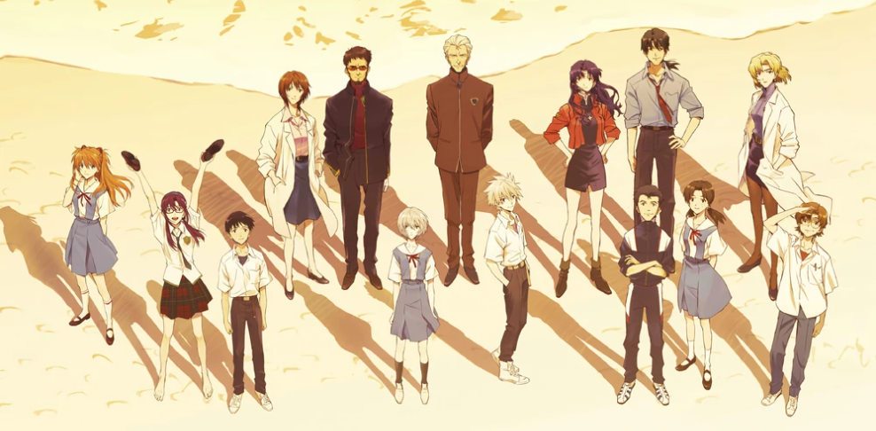

the hopeful end, of the better world
EVANGELION: 3.0 + 1.0 THRICE UPON A TIME
THE FINAL CHAPTER FULL OF EMOTIONS
After years of waiting, Evangelion: 3.0 + 1.0 brings the Rebuild series to an incredible and emotional end. The story dives even deeper into the characters' struggles and emotions, giving fans answers they've been waiting for, while still keeping some surprises along the way.
Released in 2021, this final movie is bigger and more ambitious than anything before it. The animation is absolutely stunning, and the mix of action, drama, and quiet moments feels perfectly balanced. It's a powerful ending that leaves fans feeling satisfied, hopeful, and maybe a little emotional.
CAUSION!!! if you scroll further there might be spoilers
all the new that the final is
|  | |
What's different?This final Rebuild movie brings a ton of new stuff to the
table! For starters, we finally see how regular people
are living in the messed-up world. It's not just about
giant robots and fights anymore. There's farming, small
villages, and normal life stuff, which makes everything
feel more real. |
How does it stand as an ending?But the best part? It's not just all chaos and sadness anymore. This time, the story focuses on fixing things, moving on, and even a little bit of hope. It’s the perfect way to say goodbye to the series, leaving fans happy, satisfied and maybe a little teary. |
character development like we've never seen
A much more nature turn
In the final chapter of the Rebuild series, the characters take on
a much more mature and reflective tone compared to the earlier
movies. After everything they've been through, we see them
struggling with their past actions, their emotions, and the
responsibilities they've carried for so long. This movie
doesn't just focus on giant battles or the fate of the
world—it takes the time to explore how the characters
row and change as people
Shinji, in particular, undergoes some of the most significant growth.
From his guilt and self-doubt in earlier films, he finally learns
to face his mistakes and take steps toward forgiving himself.
Asuka, Rei, and Misato also show new sides of themselves,
revealing how much they've been shaped by their experiences.
Their interactions feel deeper and more meaningful, showing
that they're not the same people they were at the beginning
of the journey.
This maturity gives the movie a strong emotional weight, making it
more than just the end of the story. It’s about healing,
understanding, and moving forward, which makes the conclusion
feel powerful and satisfying.